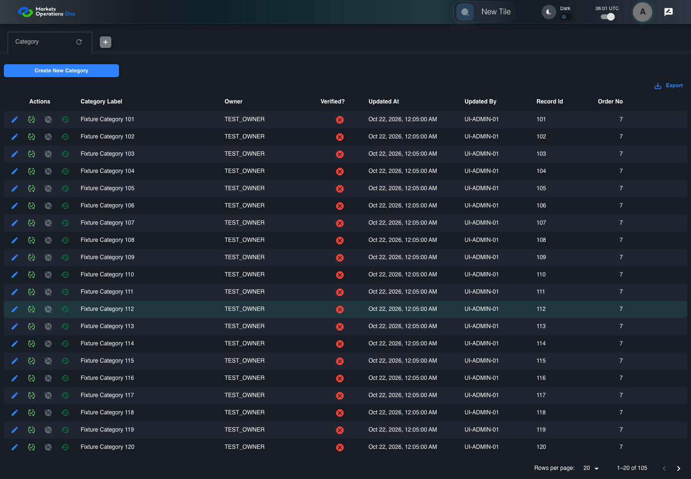
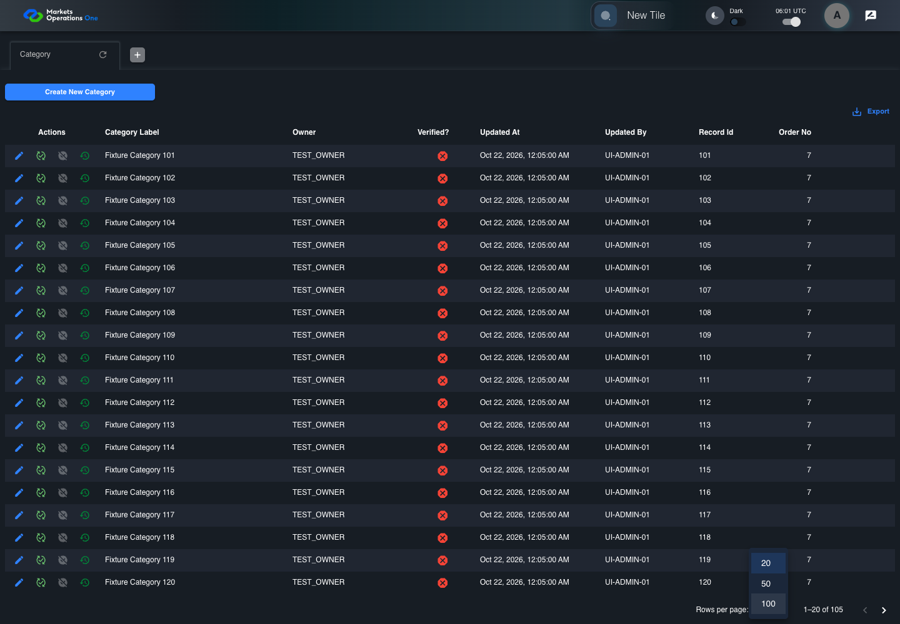

UI-ADM-GRD-004 actual administration UI with step evidence
PASS · application/run-050/ui-adm-grd-004-actual-administration-ui-with-step-evidence-5c5ecb736e6b-attempt-1 · ACTUAL_APPLICATION_LOCAL_SERVICES
Actual current React administration screens. Controlled browser login supplies UI-ADMIN-01 and TEST_OWNER, or the declared SUPER_USER. Controlled BFF routes return the case-declared records. Other controlled saves persist submitted field values. This run establishes frontend handling only. It does not execute BFF validation, storage, audit generation, or authorization.
2026-10-22T06:01:15.581Z to 2026-10-22T06:01:20.700Z
Assertions and result · Artifact manifest · Exact run inputs and source hashes
Result SHA-256:316393218a92cddf71a68cfbe77b44bd4f1f072d29e0b6efa7d9de9a5a07a7c7Machine observations
- source-resolved-pagination-target.json
fd81235d4211e235cf2ff7dc15c95fe94adb11d1a0308fd10b49d89bf376615a - ui-origin-admin-requests.json
f7b8c0eb59e63798f378224df84877b6d8cd90121082c8f002e5e4e736ed8484
Screenshot capture: CAPTURED. Named frames: 6.
Step screenshot bindings: COMPLETE. 5/5 canonical steps have execution screenshots.
Bindings measure structural coverage only. They do not establish screenshot content quality or relevance.
Screenshot content review: NOT_REVIEWED. Recorded context: 0/6 frames. Identical image bytes: 2 repeated frames. Recorded context does not establish human visual review.
Canonical step timeline
Given Admin A is authenticated as fixture UI-ADMIN-01 with the case-specific permissions
Execution: PASSED.
1. step-01 Visible state after step 1: Given Admin A is authenticated as fixture UI-ADMIN-01 with the case-specific permissions
2026-10-22T06:01:17.061Z · 1440×1000
Step: /Users/lushevol/code/github/ratan-release-impact/workbench/tasks/ui-test-coverage-20261022/test-cases.md:9946
SHA-256:e2fecea69f4b5e4c51bcbaa02ec757835da891f94c1c5ab30ccdcdea7ec7548fAnd Category response contains 105 rows
Execution: PASSED.
2. step-02 Visible state after step 2: And Category response contains 105 rows
2026-10-22T06:01:18.135Z · 1440×1000
Step: /Users/lushevol/code/github/ratan-release-impact/workbench/tasks/ui-test-coverage-20261022/test-cases.md:9947
SHA-256:942ead583facc74615b4ebd0a13a916f6efdb84602b5beb09003c8d4df908dc6When Admin A opens combobox with source identity "UNVERIFIED page-size target" inside the pagination footer of the Category administration data grid
Execution: PASSED.
3. step-03 Visible state after step 3: When Admin A opens combobox with source identity "UNVERIFIED page-size target" inside the pagination footer of the Category administration data grid
2026-10-22T06:01:18.368Z · 1440×1000
Step: /Users/lushevol/code/github/ratan-release-impact/workbench/tasks/ui-test-coverage-20261022/test-cases.md:9948
SHA-256:076afab206ec384c5ff6785e42641406605eea10c74f30516ed01ad1374c182bAnd Admin A clicks option named "100" inside the page-size popup for the Category administration data grid
Execution: PASSED.4. step-04 Visible state after step 4: And Admin A clicks option named "100" inside the page-size popup for the Category administration data grid
2026-10-22T06:01:19.081Z · 1440×1000
Step: /Users/lushevol/code/github/ratan-release-impact/workbench/tasks/ui-test-coverage-20261022/test-cases.md:9949
SHA-256:eeca9149b77cf17fa68410a6a67753cca68e218eab700defd789838e34b9015aThen the current page of data grid with source identity "administration records" inside the "Category" administration tabpanel contains 100 data records
Execution: PASSED.
5. step-05 Visible state after step 5: Then the current page of data grid with source identity "administration records" inside the "Category" administration tabpanel contains 100 data records
2026-10-22T06:01:19.522Z · 1440×1000
Step: /Users/lushevol/code/github/ratan-release-impact/workbench/tasks/ui-test-coverage-20261022/test-cases.md:9950
SHA-256:eeca9149b77cf17fa68410a6a67753cca68e218eab700defd789838e34b9015aImage bytes match frame 4. An unchanged image can be valid for consecutive assertions. This match does not establish correct step content.
Additional named frames

The final visible state after the named test assertions.
2026-10-22T06:01:19.903Z · 1440×1000Step: Test source: /Users/lushevol/code/github/ratan-release-impact/workbench/e2e/audit-specs/admin-expanded.spec.ts:15
SHA-256:
eeca9149b77cf17fa68410a6a67753cca68e218eab700defd789838e34b9015aImage bytes match frame 5. An unchanged image can be valid for consecutive assertions. This match does not establish correct step content.
Screenshots establish visible state only. Assertions and traces support functional claims.